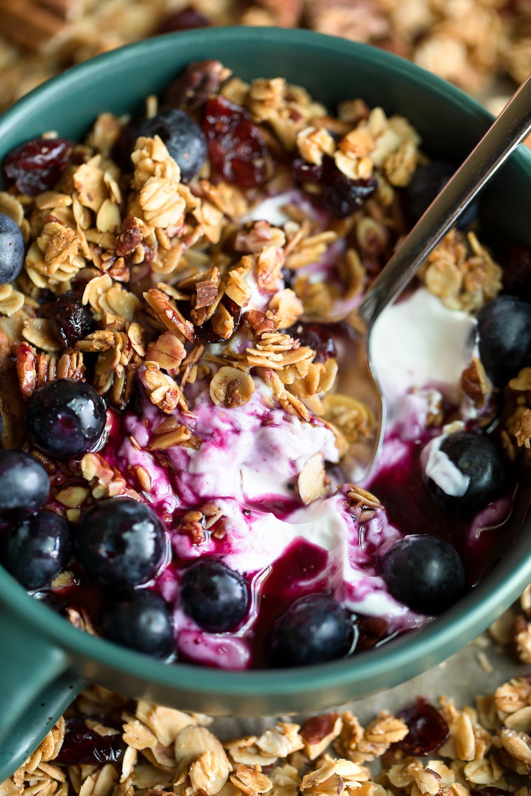

Yoghurt with Granola

What makes this danish? Well, nothing. But is very delicious nonetheless
Ingredients
- 250gm. of Greek Yoghurt
- 1 tablespoon of plum or berries jam
- 75gm. of Granola
Optional
- Cooked pears
- Powder matcha
- Oxalis flowers
Steps
In a small bowl:
- Put a tablespoon of jam
- Place the Yoghurt on top, in a way the jam is visible on the edges
- Pour the granola on top of the Yoghurt
- Garnish with the pears, matcha, and finally the oxalis flowers